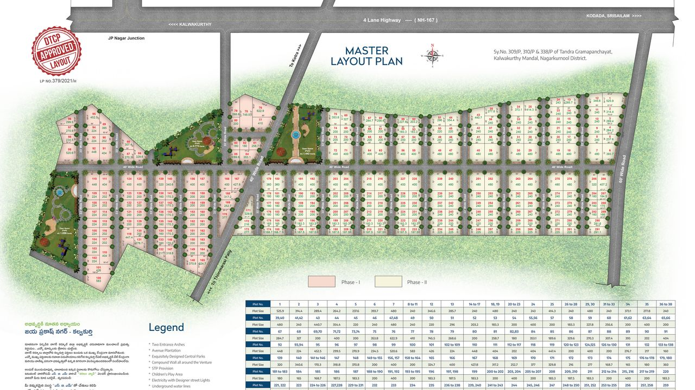
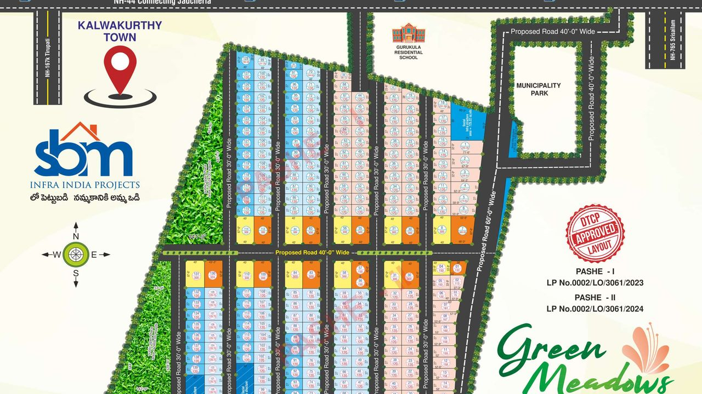
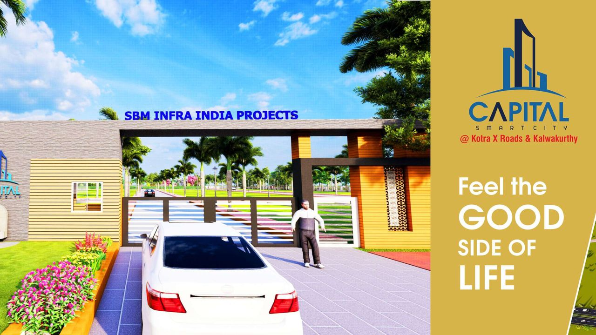
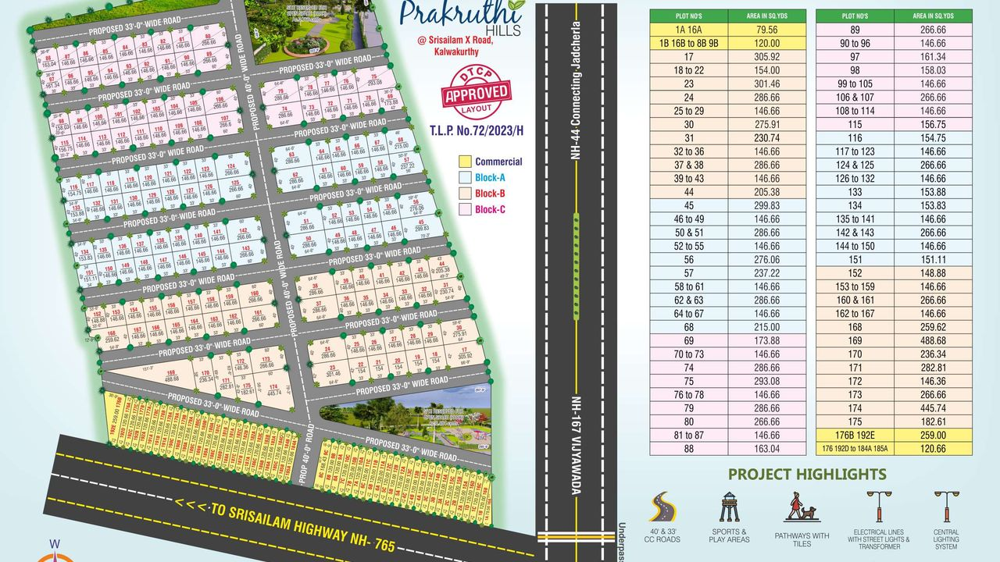
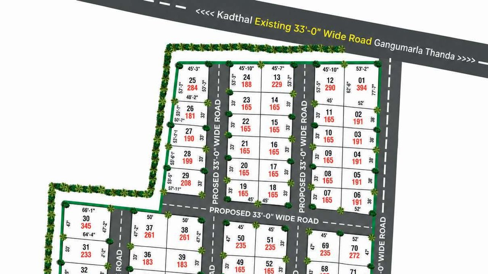

The Portfolio
Eight layouts. Every one on record.
Every SBM layout is DTCP approved with 100% clear title, developed before a single plot is sold. Browse each of the eight layouts below for current availability — the reference numbers are shown as filed.
+ 08 LAYOUTS
+ DTCP / RERA FILED
+ 100% CLEAR TITLE
+ SPOT REGISTRATION
+ PRICING ON REQUEST

RECORD 01 / 08Sharanam Valley
Jaya Prakash Nagar, Kalwakurthy “Recapturing the serenity of lifestyle” 26.4 AC · 291 PLOTS160–745 SQ. YD PLOTS · 40% OPEN SPACE
ADJ. SRISAILAM HWY (NH-765) LP 379/2021/H View Survey Record

RECORD 02 / 08Green Meadows
Kalwakurthy Municipality “Live life to the fullest every moment here” NEAR NH-44 & NH-167ADJ. MUNICIPALITY PARK & GURUKULA SCHOOL
TWO APPROVED PHASES · TS RERA P01600008411 LP 0002/LO/3061 View Survey Record

RECORD 03 / 08Capital Smart City
Kotra X Roads & Kalwakurthy “Feel the good side of life” BLOCKS A / B / C · GRAND ENTRANCE ARCHNEAR RRR · NH167K · NH765/167
412-AC FOOD PROCESSING UNIT 5 MIN LP 62·65·68/2022 View Survey Record RECORD 04 / 08
High Rich County
JP Nagar Junction “Opportunity to invest in a promising future” PARTS A / B / CHYD–SRISAILAM CORRIDOR · NH-167 / NH-167K
TS RERA P01600009169 LP 10·13·15/2024 View Survey Record RECORD 05 / 08
Modern Premium County
Kondareddypalli Junction, near J.P. Nagar Junction & Thandra Village “Premium residential plots on the 100' road” ON 100' WIDE ROADBETWEEN KALWAKURTHY & SRISAILAM
40' & 33' CC ROADS TLP 38/2025/H View Survey Record

RECORD 06 / 08 Fully BookedPrakruthi Hills
Srisailam X Road, Kalwakurthy “Ready to build lifestyle plots” KONDAREDDIPALLE, VANGOOR MANDALFRUIT & AVENUE PLANTATION
TS RERA P01600008503 TLP 72/2023/H View Survey Record

RECORD 07 / 08Urban Elite
Kadthal, near Bharat Future City “Visionary living, vital futures” RRR × METRO EXTENSIONBANK LOAN AVAILABLE · NRI FOCUS
TG RERA P02400008611 TLP 234/2023/H View Survey Record RECORD 08 / 08
Modern Premium County Phase I & Phase II
Thandra Village, Kalwakurthy Mandal, Nagarkurnool District “The golden rule of great living!” 20.88 AC · 299 PLOTSNEAR RRR · 45 MIN FROM RGIA
DTCP APPROVED · TG RERA TLP 38/2025/H · 21/2026/H View Survey Record
Can’t decide between corridors?
Tell us your budget and horizon — our team will walk you through the layouts that fit, arrange site visits, and share current pricing directly. No numbers are published online.
Pricing on request · site visits arranged daily